Blender · Communication Technology 11 · Sprint 4 · Lessons 1–10 · animatronic Snowy Village
BUILD IT TRUE.
Design a moving Snowy Village scene: laser-cut buildings that lock together, a sculpted character, a mechanism you test in Blender, and a circuit plan that brings it to life.
Real Blender renders of the demo village at dusk. Your team’s scene and your building are your own designs.
Make the village move.
This winter the Snowy Village exhibition comes alive: Santa overhead, a snowman on the move, doors opening, windows glowing. Sprint 4 designs it all in Blender; Sprints 5–7 cut, print, wire and program it.
My supports
Turn on any help you want. Your teacher may have set some for you. They change how the guide helps, not what is assessed.
Studio brief
One moving scene per team. One building per student.
Each team builds one animated scene for the Snowy Village exhibition. Every student designs one building for it, modelled in Blender at true size as laser-cut 3 mm plywood panels that lock together. The team adds a sculpted character, a mechanism and a circuit plan.
You will hand in
Studio brief and dimensioned sketch
Build_YourName_v2.blend (your own model)
Laser SVG, tested with a coupon
Assembly drawing PDF
Figure STL, sliced (team)
Mechanism animation with no collisions (team)
Circuit plan and power budget (team)
Parts list by machine
Machines
Emblaser 2: walls, bases, frosted windows
Bambu Lab H2C + AMS: cams, gears, multi-colour parts
Flashforge Adventurer 5M: extra parts
Elegoo resin: detailed figures (teacher-run)
Cricut / Silhouette: signs, window frames
Rules
Your building model is your own, made in class.
5 V only. No mains wiring anywhere in a scene.
No soldering until you pass the Maker Licence in Sprint 6.
Theme parks, shop windows and film sets are built like this.
Animatronic figures in theme parks and holiday shop windows start in 3D software: characters are sculpted, housings are modelled as parts, and every mechanism is animated on screen before anything is made. Fabricators then laser-cut the flat parts, 3D-print the complex ones, and paint by hand. Electronics technicians wire each scene to a controller from a circuit plan.
Commercial animated villages use the same ingredients you will: slow gear motors driving cams and cranks, small servos, LEDs, a sound chip and a low-voltage supply.
In Nova Scotia these skills lead to careers in manufacturing, architectural and mechanical technology, electronics, game art and film props.
Knowledge first
From screen to working model.
Scale and units
Everything is in millimetres. Measure real materials (plywood thickness, servo size) before modelling, because those numbers decide whether parts fit.
Parts that go together
Laser-cut buildings are flat panels. Finger joints interlock at the corners: one panel owns bands 1, 3, 5 and the next owns 2, 4. Kerf (the laser’s cut width) and clearance (small gaps for fit) decide how tight a joint is, so test with a coupon.
Sculpting for printing
Sculpt soft forms, then remesh into one solid. Printable parts need a flat base, minimum thickness (1.2 mm FDM, 0.8 mm resin) and exact scale.
Mechanisms
A cam turns rotation into up-and-down motion; an arm on a motor sweeps a circle; a servo turns to a set angle, ideal for doors. Animate the mechanism to prove it moves without collisions.
Circuits
A controller (micro:bit) sends signals on pins; a driver board supplies the current motors and servos need; everything shares a ground. Add up the current (power budget) to choose a safe 5 V supply.
Technical communication
Laser files say what to cut; assembly drawings (third-angle views, exploded views, a title block) say how parts go together; circuit plans say how it is wired.
What this assesses
Skills you will show.
Outcome / evidence
Where you show it
COM11 3.1 · editable digital model of parts that fit (individual)
Steps 5–8, 11–12 and the practical check (step 17)
Primary achievement evidence: the individual model change and regenerated files (step 17), plus an observed edit. Team files (figure, mechanism, circuit plan) are team evidence; each student’s building model is individual. Guided steps and supports are practice, recorded separately from achievement. No registered 3D-modelling skill ID exists yet, so evidence maps to outcomes. N1
Session A · Lesson 1 · com11-26-s04-d01
Join the animatronics studio.
The Snowy Village is coming alive: Santa flying over, a snowman on the move, doors that open. Each team builds one moving scene; each student designs one building for it.
TODAYChoose a scene and team (20 min), choose your building (15 min), sketch it with the moving parts and wiring in mind (30 min).
01
Choose your scene and your building
IN SHORTTeam and scene; roles; your building; constraints; the first moment.
READ ALOUD
DOCUMENT: This guide · Studio_brief.txt SELECT: One animated scene (team) · one building (you) TOOLS / ROUTE: Read the scene menu · choose · record roles
Read the four scene options below and how each one moves: a motor and long arm, a cam, a servo, or a turntable.
Join a team of 3–4 for one scene. Agree roles: mechanism lead, electronics lead, figure sculptor, set designer. Everyone still designs their own building.
Choose your building (bakery, library, fire hall, rink hut, clock tower, general store) and what the scene needs from it: a door that opens, lit windows, space underneath for a motor.
Record the shared constraints: base 150 × 100 mm per building, walls 3 mm plywood (laser-cut), figures up to 50 mm tall, everything powered at 5 V.
Write the one moment a visitor should notice first when the scene switches on.
STEP CHECKLIST
GLOSSARY
Animatronic: A model moved by motors or servos to look alive
Constraint: A fixed requirement the design must meet
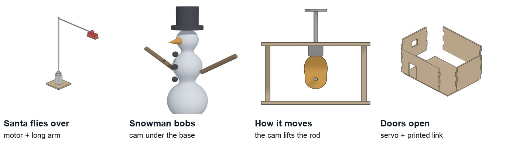
Real Blender models of the scene options: Santa on a motor-driven arm, a sculpted snowman, the cam that lifts it, and doors on a servo.
WHYAnimatronic models, from theme parks to shop-window displays, are team builds. Deciding the moment the audience notices first keeps every part serving the scene.
CHECKA team, a scene, your role and building, the shared constraints, and one sentence describing the visitor’s first moment.
FIXEveryone wants Santa? Your teacher assigns scenes so each is covered. Unsure of a role? Mechanism and electronics leads share the Sprint 6 wiring anyway.
WORKED EXAMPLE · DIFFERENT OBJECTThe demo team chose “Snowman bobs outside the bakery”: a cam under the base lifts the snowman while the bakery windows glow and a bell sound plays.
STRETCH (AFTER THE CHECK PASSES)Pitch a fifth scene (skaters on a turntable, a chimney that puffs) with how it would move.
Method basis: N1. Values and sequence are authored for this project.
02
Sketch your building with its mechanism and wiring
IN SHORTFreehand front and side; sizes in mm; dashed hidden parts; power entry.
READ ALOUD
DOCUMENT: Studio_brief.txt · squared paper SELECT: Front and side of your building TOOLS / ROUTE: Sketch · label every size in mm · mark hidden parts
Sketch the front and side freehand on squared paper (one square = 10 mm).
Label width, depth, wall height, roof height, and each door and window in mm.
Mark in dashed lines what hides inside or under it: motor, cam, servo, LED strip, wire route, and where the USB power enters the base.
Check every size against the constraints, and leave at least 20 mm under the base for the mechanism.
Circle the part you think will be hardest to fit.
STEP CHECKLIST
GLOSSARY
Hidden line: A dashed line showing an edge or part you cannot see from that view
WHYAnimatronics fail when there is no room for the machinery. Sketching hidden parts first stops you designing a building that cannot hold its own mechanism.
CHECKA front and side sketch with every size in mm, hidden parts dashed, a wire route and a power entry point.
FIXNot sure how big a servo is? An SG90 is about 23 × 12 × 29 mm. A micro:bit is 52 × 42 mm.
WORKED EXAMPLE · DIFFERENT OBJECTThe demo bakery: 120 × 80 × 70 mm walls, a 24 × 40 door, a 20 mm space under the base for the cam and motor.
STRETCH (AFTER THE CHECK PASSES)Sketch a section through the base showing the cam and follower rod.
Session B · Lesson 2 · com11-26-s04-d02
Measure and read drawings.
Laser-cut joints only fit if you know the real thickness of your plywood. Drawings only work if everyone reads them the same way.
IN SHORTZero the caliper; plywood ×3; servo and motor; record; note dependent sizes.
READ ALOUD
DOCUMENT: Plywood offcut · SG90 servo · N20 motor · caliper · Studio_brief.txt SELECT: Thickness and part sizes TOOLS / ROUTE: Caliper · record to 0.1 mm
Close the caliper jaws and check it reads 0.0.
Measure the plywood thickness in three places. Record the average; this is your joint size (usually about 3.0 mm, sometimes 2.7–3.2).
Measure the servo body, its mounting tabs and the motor shaft diameter.
Record every number in a table to 0.1 mm.
Note which of your building’s sizes depend on these numbers (joint depth, servo pocket, shaft hole).
STEP CHECKLIST
GLOSSARY
Caliper: A tool that measures sizes precisely between two jaws
Kerf: The width of material the laser burns away (about 0.1–0.2 mm)
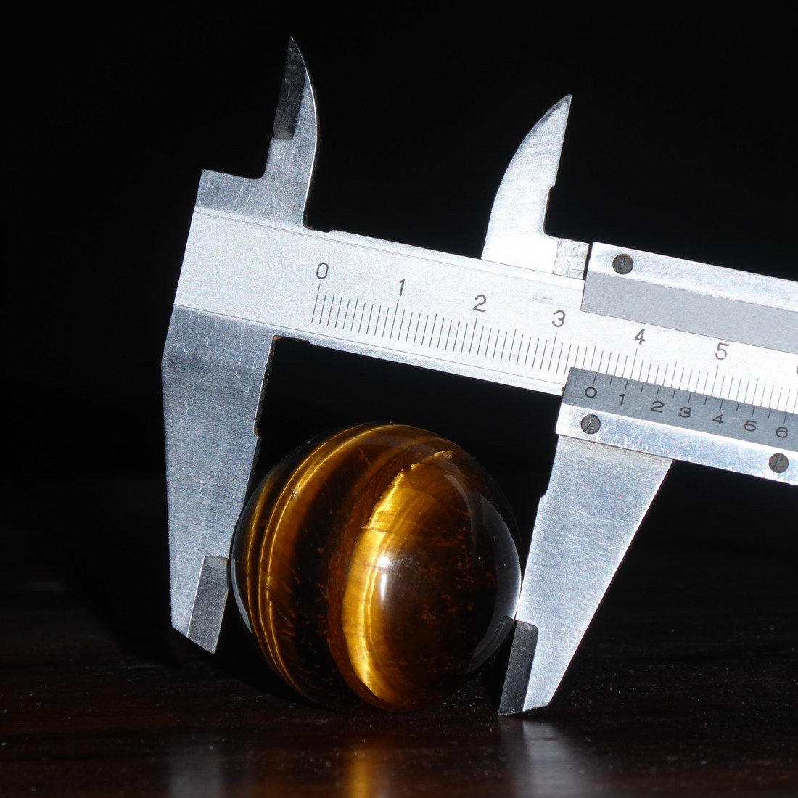
A caliper measures to 0.1 mm between its jaws. Read the main scale, then the fine scale.
WHYA finger joint designed for 3.0 mm plywood will be loose on 2.7 mm and will not close on 3.2 mm. Measured numbers, not guessed ones, make parts fit.
CHECKA table with the plywood thickness (average of three) and the servo and motor sizes, each to 0.1 mm.
FIXReadings jump around? Hold the jaws square to the surface and do not squeeze. Different plywood sheets? Measure the actual sheet you will cut.
WORKED EXAMPLE · DIFFERENT OBJECTThe class plywood averaged 2.9 mm, so the demo joints are modelled at 3 mm with a 0.1 mm allowance.
STRETCH (AFTER THE CHECK PASSES)Measure the inside of a servo horn hole with the inside jaws.
04
Read a professional technical drawing
IN SHORTLine types; dimension rules; redraw with three dimensions and a hidden part; partner check.
READ ALOUD
DOCUMENT: This step · a drawing sheet SELECT: Line types, dimensions and labels TOOLS / ROUTE: Read · annotate · practise
Find the building outline, openings, title and scale in the professional elevation below.
Learn the line types: thick solid = visible edge, thin = dimension and extension lines, dashed = hidden edge.
Learn the rules: dimensions in mm, each size once, extension lines that do not touch the object, arrows that touch the extension lines.
Redraw one view of your building neatly and add three dimensions and one dashed hidden part (the servo or motor).
Swap with a partner: can they read your door height and find the hidden servo?
STEP CHECKLIST
GLOSSARY
Elevation: A flat view of one side of a building
Extension line: A thin line carrying an edge out to a dimension
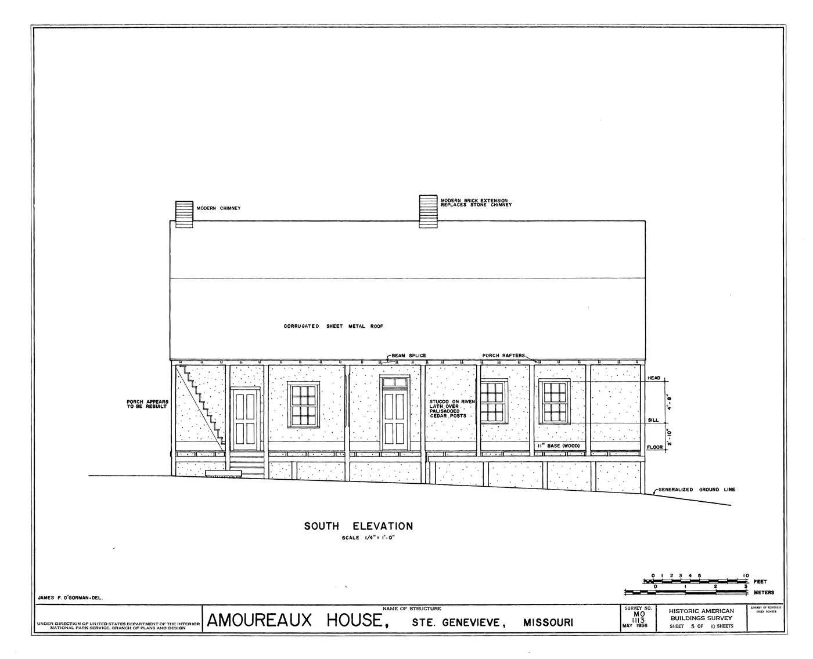
A professional elevation drawing (National Park Service, public domain): views, line weights and labels anyone can read.
WHYYour teammates will build from your drawings in Sprint 5. Standard lines and dimensions mean nothing gets misread.
CHECKOne neat view with three correct dimensions and one hidden part that a partner can read without asking.
FIXArrows everywhere? Dimension each size once, outside the object.
WORKED EXAMPLE · DIFFERENT OBJECTA partner misread a door as 40 wide because the dimension sat between the wrong extension lines.
STRETCH (AFTER THE CHECK PASSES)Find the scale on the professional drawing and calculate one real size.
Method basis: P1. Values and sequence are authored for this project.
Session C · Lesson 3 · com11-26-s04-d03
Blender at true scale: walls as parts.
A laser-cut building is not one solid block. It is separate 3 mm panels. Model it the way it will be made.
TODAYSet units (10 min), model four wall panels and a base (45 min), check sizes (10 min).
05
Set Blender to millimetres
IN SHORTDelete cube; units to mm; sidebar; save; base 150 × 100 × 3.
READ ALOUD
DOCUMENT: Blender · Build_YourName.blend SELECT: Scene units TOOLS / ROUTE: Properties › Scene › Units
Open Blender (File › New › General) and delete the default cube (X › Delete).
Properties › Scene tab › Units: Unit System Metric, Unit Scale 0.001, Length Millimeters.
Press N in the viewport to open the sidebar; type exact sizes in its Item tab.
Save as Build_YourName.blend. Save after every step (Ctrl/Cmd+S).
Add › Mesh › Cube and type Dimensions 150 × 100 × 3 to make your base. Apply scale (Ctrl/Cmd+A › Scale).
STEP CHECKLIST
GLOSSARY
Unit scale: How many metres one Blender unit represents
Illustration: Illustration: Scene › Units in millimetres, and exact dimensions typed in the sidebar.
WHYWith Unit Scale 0.001, one Blender unit is one millimetre, so every size you type matches the laser and the printers.
CHECKUnits show Metric, 0.001, Millimeters; a 150 × 100 × 3 base exists with scale applied.
FIXGrid huge or tiny? That is the new scale: press Home. Sidebar missing? Hover the viewport and press N.
WORKED EXAMPLE · DIFFERENT OBJECTA student skipped this and sent a 150-metre base to the slicer. Units first, always.
STRETCH (AFTER THE CHECK PASSES)Turn on grid scale by unit in Overlays so the grid shows 10 mm squares.
Method basis: B1. Values and sequence are authored for this project.
06
Model each wall as its own 3 mm panel
IN SHORTFront, back, left, right as 3 mm panels; rename; place; check from above.
READ ALOUD
DOCUMENT: Build_YourName.blend SELECT: Front, back, left and right panels TOOLS / ROUTE: Add cube · Dimensions · rename · place on the base
Add a cube for the front wall: Dimensions X = building width, Y = 3 (plywood), Z = wall height. Apply scale. Rename it Front.
Duplicate it (Shift+D) for Back and move it to the far side.
Add the side walls: X = 3, Y = building depth, Z = wall height. Rename them Left and Right.
Place all four on the base so their outer faces line up with your sketch (use the sidebar Location values).
Look from above (Numpad 7): four thin panels, each exactly one plywood thick.
STEP CHECKLIST
GLOSSARY
Part: One separate piece that is cut or printed on its own
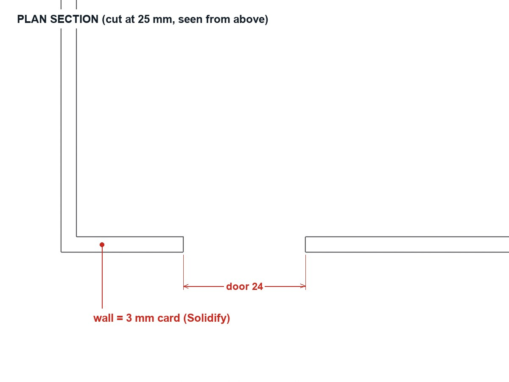
A plan section through a real Blender model: each wall is a separate 3 mm panel, with the door opening cut through the front.
WHYModelling each panel separately means every Blender object becomes one laser-cut part. What you model is exactly what gets cut.
CHECKFour named panels, each 3 mm thick, sitting on the base in the right places, matching the sketch.
FIXPanels overlap at corners? That is expected for now; the finger joints next lesson solve the corners.
WORKED EXAMPLE · DIFFERENT OBJECTThe demo bakery panels: front and back 120 × 3 × 70; sides 3 × 80 × 70.
STRETCH (AFTER THE CHECK PASSES)Add a roof as two 3 mm panels resting on the side walls.
Method basis: B1. Values and sequence are authored for this project.
Session D · Lesson 4 · com11-26-s04-d04
Pieces that lock together.
Finger joints let laser-cut walls lock at the corners without screws: the fingers on one panel fill the gaps on the next.
TODAYModel finger joints (35 min), openings and a mechanism hole (20 min), exploded check (10 min).
07
Cut finger joints into the corners
IN SHORTFive bands; cutters on alternate bands; Array + Mirror + Boolean; opposite pattern on sides; check corners.
READ ALOUD
DOCUMENT: Build_YourName.blend SELECT: The corner ends of all four panels TOOLS / ROUTE: Cutter cubes · Array modifier · Boolean (Difference)
Split each wall height into 5 equal bands (for a 70 mm wall, 14 mm each).
On the front and back, the fingers are bands 1, 3 and 5. Add a small cutter cube 3 × 3.2 × 14 mm at band 2 of one corner.
Give the cutter an Array modifier (count 2, relative offset Z = 2) so it covers bands 2 and 4. Add a Boolean Difference on the panel using it.
Mirror the cutter to the other end (Mirror modifier on X). On the side walls, cut bands 1, 3 and 5 instead, so the panels interlock.
Zoom into a corner: fingers on one panel must fill the gaps on the other exactly, with no overlap.
STEP CHECKLIST
GLOSSARY
Finger joint: Interlocking rectangular fingers that join two panels at a corner
Array modifier: Repeats an object at a set spacing
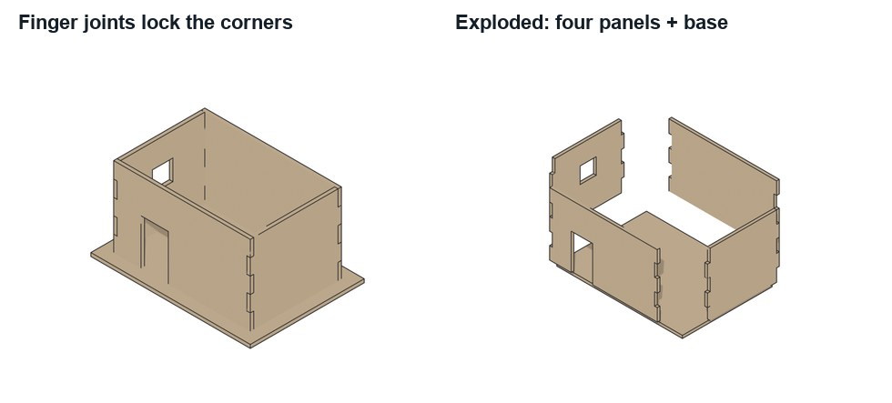
Real Blender model: the fingers on the front fill the gaps on the side panel, and the building separates into flat parts.
WHYA joint that fits in the model will fit in plywood, as long as the thickness is the measured one. Array and Boolean keep the joints editable.
CHECKAll four corners interlock: 5 bands per edge, alternating, with no gaps or overlaps when viewed up close.
FIXFingers clash? One panel has the wrong bands: swap its cutter to the other set. Joints too tight in real plywood? Change the cutter width from 3.0 to your measured thickness + 0.1.
WORKED EXAMPLE · DIFFERENT OBJECTWorked on a different box: a student built a 60 mm pencil box with 3 fingers per corner, and the lid used the same cutter set.
STRETCH (AFTER THE CHECK PASSES)Try 7 bands. Is the joint stronger or harder to assemble?
Method basis: B3. Values and sequence are authored for this project.
08
Cut openings and a pocket for the mechanism
IN SHORTDoor and windows; servo pocket; wire hole and mechanism slot; hide cutters; explode to check.
Add a cutter cube for the door (for example 24 × 20 × 40) and Boolean it out of the front panel. Do the same for the windows.
If your scene has a servo door, cut a servo pocket in the base (your measured servo size + 0.4 mm) under the door hinge.
Cut a 6 mm hole in the base under each building for wires, and a slot where the cam rod or Santa arm passes through.
Hide every cutter (Object properties › Viewport Display › Display As: Wire; untick in renders). Keep them: moving a cutter moves the hole.
Explode the model: move each panel 20 mm outward to check every part is separate and every hole is where you planned.
STEP CHECKLIST
GLOSSARY
Clearance: A small gap left so parts fit and move freely
Illustration: Illustration: a panel’s modifier stack. Solidify or exact size, then one Boolean Difference per opening; cutters stay editable.
WHYOpenings, pockets and wire holes are what turn a building into a machine housing. Keeping cutters editable makes the next change quick.
CHECKDoors and windows cut; the servo pocket, wire hole and mechanism slot are in the base; cutters hidden but kept; an exploded check shows separate parts.
FIXHole doesn’t go through? Make the cutter deeper than the panel. Pocket too tight? Add 0.2 mm on each side for printer or laser variation.
WORKED EXAMPLE · DIFFERENT OBJECTThe demo base has a 12 mm slot for the snowman’s cam rod and a 6 mm wire hole behind the bakery.
STRETCH (AFTER THE CHECK PASSES)Add frosted-acrylic window inserts: a second, 0.2 mm smaller rectangle that will be cut from acrylic.
Method basis: B3. Values and sequence are authored for this project.
Session E · Lesson 5 · com11-26-s04-d05
Laser file and assembly drawing.
The panels go flat for the laser; the assembled building goes on a drawing your team can build from.
TODAYLay out and export the cut file (30 min), assembly drawing (35 min).
09
Lay the panels flat and export the laser file
IN SHORTLASER collection; rotate flat; apply modifiers on copies; export SVG; check in LightBurn; test coupon.
READ ALOUD
DOCUMENT: Build_YourName.blend · LightBurn SELECT: All panels and the base TOOLS / ROUTE: Rotate flat · top view · export SVG · LightBurn
Duplicate your panels into a new collection called LASER. Rotate each one flat (R X 90) and arrange them on a 300 × 200 mm area with 5 mm gaps.
Apply the Boolean modifiers on the copies only (Ctrl/Cmd+A › Visual Geometry to Mesh), so the outlines include the fingers and holes.
Export the top-view outlines as SVG (File › Export › SVG with Freestyle SVG, or project to 2D and trace), at 1:1 scale in mm.
Open the SVG in LightBurn: check it is at true size (measure one panel), set red = cut. Your teacher sets power and speed for the plywood.
Cut a small test coupon of one corner first. If the joint is loose or tight, adjust the cutter width in Blender and re-export.
STEP CHECKLIST
GLOSSARY
Nesting: Arranging parts close together on a sheet to save material
Test coupon: A small sample cut to check fit before the full job
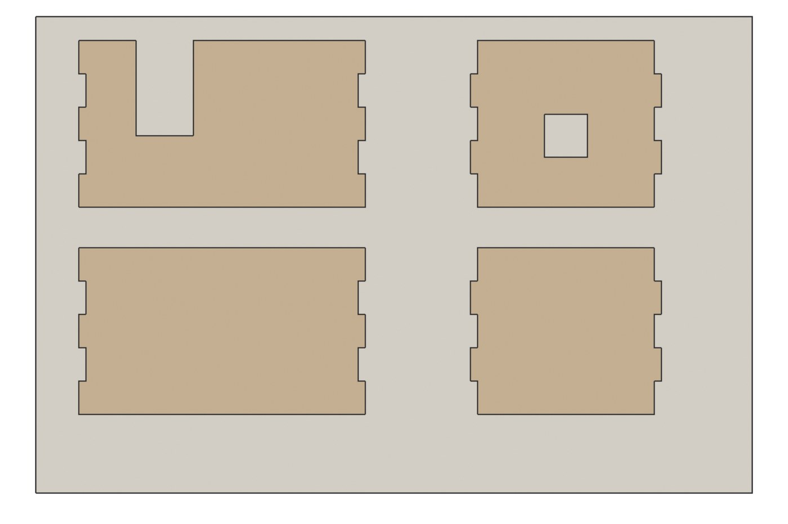
The demo’s four panels laid flat on one sheet, each outline including its fingers and openings. This is exactly what the laser follows.
WHYLasers follow outlines, not solids. Laying parts flat and nesting them saves material; the test coupon tells you the real kerf before you cut everything.
CHECKA true-size SVG with every panel and the base, no overlaps, verified in LightBurn, and a coupon result recorded.
FIXSVG tiny in LightBurn? The export was in metres: check Units and export scale. Outline missing fingers? The Booleans were not applied on the copies.
WORKED EXAMPLE · DIFFERENT OBJECTThe demo file Bakery_Laser_Panels_120mm.svg is in the downloads: open it in LightBurn to see a correct cut file.
STRETCH (AFTER THE CHECK PASSES)Engrave details (bricks, a sign) with a separate colour layer set to engrave, not cut.
Method basis: L1. Values and sequence are authored for this project.
10
Make the assembly drawing
IN SHORTThree orthographic views; third-angle layout; dimensions; exploded view; title block; share.
READ ALOUD
DOCUMENT: Build_YourName.blend · Photoshop or Google Drawings SELECT: Assembled building: front, side, top + exploded view TOOLS / ROUTE: Orthographic renders · dimensions · title block
Render front (Numpad 1), right side (Numpad 3) and top (Numpad 7) orthographic views at one zoom.
Lay them out in third-angle projection (top above front, right side to the right) and add the main dimensions in mm.
Add an exploded isometric render showing how the panels fit, with each part labelled (Front, Back, Left, Right, Base).
Add a title block: title, units (mm), projection (third angle), material (3 mm plywood), team scene, your name.
Export as PDF and share it with your team; the set designer checks it fits the scene layout.
STEP CHECKLIST
GLOSSARY
Third-angle projection: Top view above the front, right view to its right; used in North America
Exploded view: A drawing with parts pulled apart to show how they fit
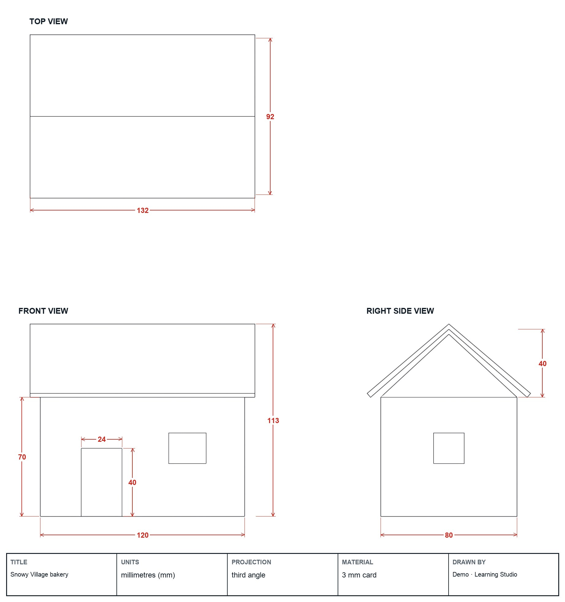
A third-angle drawing set made from real Blender views: top over front, right side beside it, dimensions in mm, a title block.
WHYThe laser file says what to cut; the assembly drawing says how it goes together. A teammate should be able to assemble your building from it alone.
CHECKThree aligned, dimensioned views, a labelled exploded view, a complete title block, shared with the team.
FIXViews at different scales? Re-render without zooming, or use an orthographic camera. Numbers disagree with the model? The model is the truth.
WORKED EXAMPLE · DIFFERENT OBJECTThe demo drawing gives the door as 24 × 40 on the front view only, because each size appears once.
STRETCH (AFTER THE CHECK PASSES)Add a parts table to the sheet: part, size, material, quantity.
Method basis: P1. Values and sequence are authored for this project.
Session F · Lesson 6 · com11-26-s04-d06
Sculpt a figure and make it printable.
Every scene needs a character. Sculpt it in Blender, then make it solid, sturdy and the right size for the resin or FDM printer.
TODAYSculpt (40 min), make it printable and export (25 min).
11
Sculpt your character
IN SHORTSpheres; voxel remesh; Grab and Clay Strips; Draw and Crease details; mirror; scale.
READ ALOUD
DOCUMENT: Build_YourName.blend · reference sketch SELECT: One figure up to 50 mm tall TOOLS / ROUTE: Sculpt Mode · Draw, Clay Strips, Grab, Smooth, Inflate
Add a UV sphere (or three for a snowman) and switch to Sculpt Mode. Turn on Remesh › Voxel Size 0.5 mm in the header, then press Ctrl/Cmd+R.
Block the big shapes with Grab (G) and Clay Strips; press Ctrl/Cmd+R to remesh whenever the surface stretches.
Add features with Draw and Crease: a hat brim, a scarf, Santa’s beard, a coat edge. Use Smooth (Shift) to blend.
Turn on X-mirror (in the header) so both sides match.
Scale it to your scene: set its height in the sidebar (for example 45 mm) and apply scale.
STEP CHECKLIST
GLOSSARY
Sculpt Mode: Shaping a mesh like digital clay with brushes
Voxel remesh: Rebuilds a mesh into even, solid geometry
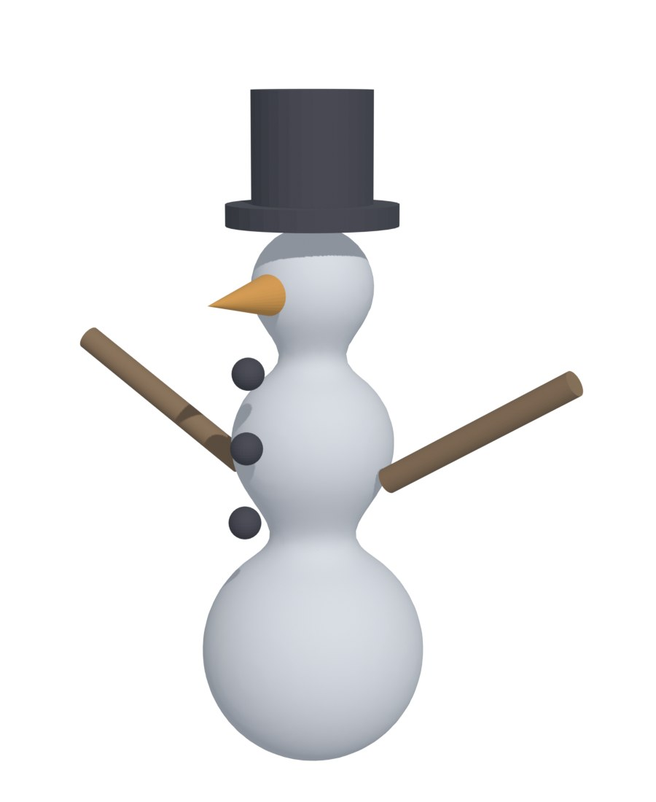
The demo snowman, sculpted as soft forms and remeshed into one solid, with printed hat, nose and arms added as simple parts.
WHYSculpting is how animation and toy studios make characters: shape first, detail later. Voxel remesh keeps the model one clean solid, which printers need.
CHECKA recognisable character, one solid mesh, mirrored, at the planned height in mm.
FIXSurface tearing or spiky? Remesh again (Ctrl/Cmd+R) or raise the voxel size. Brush does nothing? Check you are in Sculpt Mode with the object selected.
WORKED EXAMPLE · DIFFERENT OBJECTThe demo snowman uses three remeshed spheres, a flattened base, and a separate hat and carrot that print in colour on the H2C’s AMS.
STRETCH (AFTER THE CHECK PASSES)Add a second pose of the character for the “after” state of your scene.
Method basis: B4. Values and sequence are authored for this project.
12
Make the figure printable and slice it
IN SHORTFlat base; minimum thickness; mounting hole; export at 1:1; slice; record time and material.
READ ALOUD
DOCUMENT: Build_YourName.blend · Bambu Studio or CHITUBOX SELECT: The character mesh TOOLS / ROUTE: Flat base · min thickness · export STL/3MF · slice
Flatten the base: Boolean-cut the bottom 1–2 mm so it stands and sticks to the build plate.
Check thin parts: nothing thinner than 1.2 mm for FDM or 0.8 mm for resin (arms, carrot, hat brim). Thicken with Inflate or Solidify.
Add a mounting hole: a 3.2 mm hole up into the base so it can sit on the cam rod or Santa arm.
Export: File › Export › STL (or 3MF), Selection Only, Scale 1.0, check the size is in mm.
Slice it: Bambu Studio for the H2C (PLA, 0.12 mm layers) or CHITUBOX for the Elegoo resin printer (teacher-run). Record print time and material.
STEP CHECKLIST
GLOSSARY
Slicer: Software that turns a 3D model into printer instructions, layer by layer
Minimum wall thickness: The thinnest a part can be and still print strongly
WHYA model that looks right on screen can still fail to print. Flat bases, minimum thickness and a mounting hole are the difference between a figure and a mess.
CHECKA sliced figure with a flat base, no parts under the minimum thickness, a 3.2 mm mounting hole, and a recorded print time and material.
FIXSlicer shows it tiny? Export scale or units were wrong: re-export with Scale 1.0. Arms print as spaghetti? Add a small support or thicken them.
WORKED EXAMPLE · DIFFERENT OBJECTThe demo snowman sliced in about 40 minutes on the H2C, with the hat and carrot in black and orange from the AMS.
STRETCH (AFTER THE CHECK PASSES)Hollow a resin figure (2 mm walls with a drain hole) to save resin, and compare the slicer’s estimate.
Method basis: S1 · S2. Values and sequence are authored for this project.
Session G · Lesson 7 · com11-26-s04-d07
Model and test the mechanism.
Before anything is printed, prove the movement works: model the mechanism in Blender and animate it to see the motion and check nothing collides.
TODAYModel the mechanism (35 min), animate and check clearance (30 min).
13
Model your scene’s mechanism
IN SHORTModel the cam, arm or link; parent to the driver; place it in the building.
READ ALOUD
DOCUMENT: Build_YourName.blend (team file) · measured motor/servo sizes SELECT: Cam and follower, arm, or servo link TOOLS / ROUTE: Add cylinders and profiles · parent parts
Cam scene: model a cam profile (a circle with one lobe, 6–10 mm rise) on a 3 mm shaft, a follower rod and a platform for the figure.
Santa scene: model the motor block, a hub, a 2 mm steel-rod arm and the sleigh at its end.
Door scene: model the servo, its horn and a link rod from the horn to the door.
Parent moving parts to what drives them (select child, then parent, Ctrl/Cmd+P › Object), so rotating the driver moves the rest.
Place the mechanism under or behind your building using the pockets and slots you cut.
STEP CHECKLIST
GLOSSARY
Cam: A shaped wheel that pushes a follower up and down as it turns
Parent: Linking objects so one moves the others
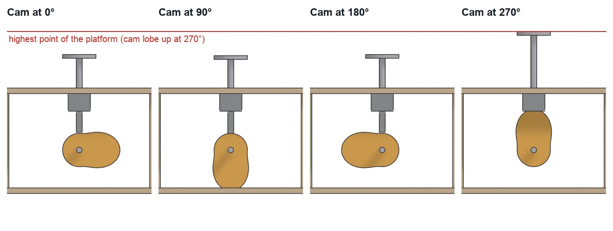
The demo cam at four angles (real Blender renders): as the lobe turns upward, the rod and platform rise, and the snowman bobs.
WHYA cam turns rotation into up-and-down motion; an arm turns rotation into a circle; a servo link turns a small turn into a door swing. Choosing the right one is mechanical design.
CHECKA mechanism modelled at true size, parented so the driver moves the parts, and placed in the building’s pockets and slots.
FIXParts do not follow the driver? Check the parent order: the driver must be the active (last-selected) object.
WORKED EXAMPLE · DIFFERENT OBJECTThe demo cam rises 13 mm from a 9 mm base circle, enough for a visible bob without tipping the snowman.
STRETCH (AFTER THE CHECK PASSES)Design a double-lobe cam so the figure bobs twice per turn.
Method basis: B5. Values and sequence are authored for this project.
14
Animate it and check the motion
IN SHORTKeyframe rotation; full turn; Linear; play; check collisions; record the range.
READ ALOUD
DOCUMENT: Build_YourName.blend SELECT: The driver’s rotation over one turn TOOLS / ROUTE: Keyframes (I) on Rotation · Timeline · play · check clearance
Go to frame 1, select the driver (cam, hub or servo horn) and press I › Rotation to insert a keyframe.
Go to frame 96, rotate it one full turn (R Y 360 for a cam, R Z 360 for a hub), or 90° for a servo door, and key it again.
Select the keyframes in the Timeline and set interpolation to Linear (T › Linear) so the speed is constant.
Play (spacebar). For a cam, drive the follower’s height with a Driver or keyframe it by eye at 0°, 90°, 180° and 270°.
Watch every frame for collisions: nothing may pass through a wall, the base or another part. Record the range of motion in mm or degrees.
STEP CHECKLIST
GLOSSARY
Keyframe: A saved value at a moment in time
Collision: Two parts trying to occupy the same space
WHYAn animation is a free prototype. Collisions found now cost nothing; found after printing and cutting, they cost a day.
CHECKA looping animation of one full cycle, no collisions, and the recorded range of motion.
FIXMotion speeds up and slows down? Set interpolation to Linear. Part flies away? It is not parented to the driver.
WORKED EXAMPLE · DIFFERENT OBJECTThe demo cam animation showed the rod catching the base slot at 270°, so the slot was widened from 8 to 12 mm before cutting.
STRETCH (AFTER THE CHECK PASSES)Render the animation as a 4-second video for your team’s pitch.
Method basis: B5. Values and sequence are authored for this project.
Session H · Lesson 8 · com11-26-s04-d08
Circuit plan and power budget.
Lights, sound and motion all need power and a controller. Plan every wire before Sprint 6, when you build and solder it.
TODAYCircuit plan (35 min), simulate a first test (30 min).
15
Draw the circuit plan and the power budget
IN SHORTBase from below; devices; colour-coded routes; pins; power budget.
READ ALOUD
DOCUMENT: Circuit_plan template · team scene layout SELECT: Board, power, motor/servo, LEDs, speaker TOOLS / ROUTE: Block diagram · wire routes · current totals
Draw the village base from underneath. Place the micro:bit and driver board, the 5 V USB entry, and each building.
Draw a box for each device: servo (door), N20 motor (cam or Santa), LED strip (windows), sound module and speaker.
Draw each wire route under the base and up through the 6 mm holes. Use red for 5 V, black for ground, and a colour per signal.
Write which board pin controls each device (for example: servo S1, motor M1, LEDs P1, sound P8/P12).
Add the power budget: servo about 0.5 A at peak, motor about 0.2 A, 15 LEDs about 0.3 A. Check the total is under the 2–3 A supply.
STEP CHECKLIST
GLOSSARY
Power budget: Adding up the current every device needs to choose a safe supply
Ground (GND): The shared return path for current, usually a black wire
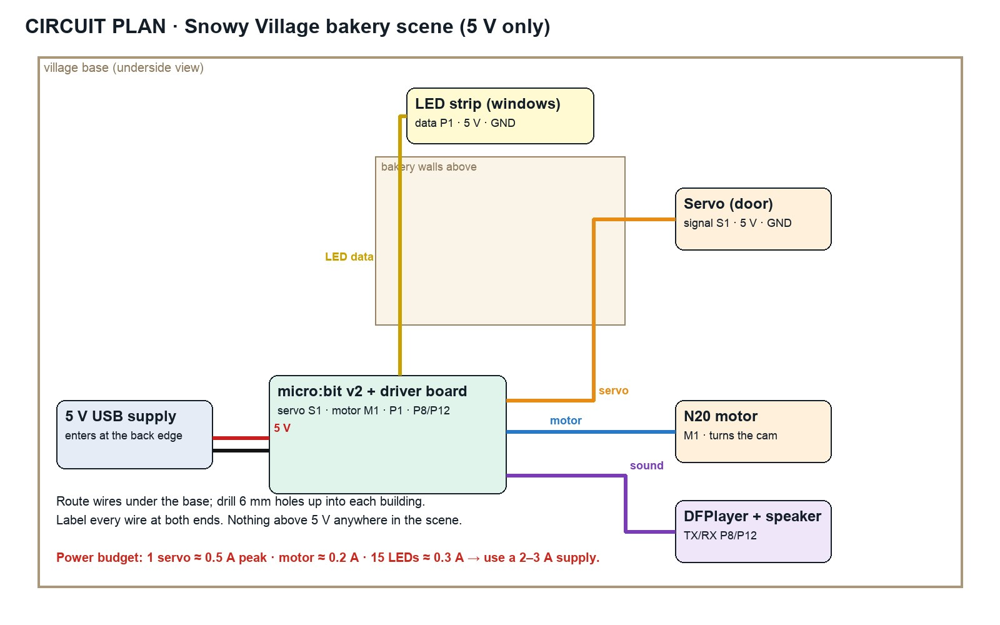
The demo circuit plan: every device, its pin, its wire route under the base, and a power budget that fits a 5 V supply.
WHYA circuit plan prevents tangles, dead batteries and burnt parts. The power budget tells you which supply to use before anything is connected.
CHECKA plan with every device, its pin, colour-coded routes through the base, a power entry point and a power budget within the supply.
FIXTotal over the supply? Lights and motion rarely peak together, but plan for a bigger supply or fewer LEDs.
WORKED EXAMPLE · DIFFERENT OBJECTThe demo plan totals about 1.0 A at peak, so a 2 A supply leaves a safe margin.
STRETCH (AFTER THE CHECK PASSES)Add a push button or motion sensor so the scene starts when a visitor walks up.
Method basis: C1. Values and sequence are authored for this project.
16
Simulate the first test in Tinkercad Circuits
IN SHORTNew circuit; micro:bit + one device; wire to plan; block code; simulate; screenshot.
READ ALOUD
DOCUMENT: Tinkercad Circuits (school account) · MakeCode SELECT: One device from your plan TOOLS / ROUTE: Build the circuit on screen · code · run the simulation
Open Tinkercad Circuits and start a new circuit. Add a micro:bit and the device you will control first (a servo or an LED with a resistor).
Wire it as in your plan: signal to the planned pin, power and ground to the right rails.
Switch to Code (Blocks). Make the servo sweep 0° → 90° → 0°, or the LED blink, on button A.
Start the simulation and press A. Fix any wiring that does not work.
Screenshot the working simulation and add it to your plan. This is the first check for your Sprint 6 Maker Licence.
STEP CHECKLIST
GLOSSARY
Simulation: Testing a circuit on screen before building it
Pin: A numbered connection on the board that sends or reads a signal
WHYSimulating first means mistakes cost nothing. In Sprint 6 you will build the same circuit for real, after passing the soldering safety test.
CHECKA working simulation screenshot of one device from your plan, controlled by your code on the planned pin.
FIXServo jitters in the simulation? Check power and ground go to the right rails. No micro:bit in Tinkercad? Use an Arduino Uno; the idea is the same.
WORKED EXAMPLE · DIFFERENT OBJECTThe demo team simulated the door servo on pin 0 and found it needed its own 5 V supply rather than the micro:bit’s 3 V.
STRETCH (AFTER THE CHECK PASSES)Add the LED strip to the simulation and make the windows flicker like a fireplace.
Method basis: C1 · C2. Values and sequence are authored for this project.
Session I · Lesson 9 · com11-26-s04-d09
The committee changes the brief.
The village committee changes one requirement. Your model, laser file and circuit plan must all update and still agree.
Practical check: change one requirement and update everything
IN SHORTKnowledge check; v2 copy; read the card; change the model; regenerate files; explain.
READ ALOUD
DOCUMENT: Committee change card · Build_YourName.blend · laser SVG · circuit plan SELECT: Everything the change affects TOOLS / ROUTE: Your own decisions
Complete the knowledge check your teacher opens, then save a copy as Build_YourName_v2.blend.
Read your committee change card (for example: the lot is now 150 mm wide; the plywood is 2.7 mm; the power must enter at the back; the figure must be 55 mm tall).
Decide on your own which panels, joints, cutters, figure or wires must change. Change the model first.
Regenerate the laser SVG and update the assembly drawing and circuit plan so all three agree with the model.
Write three sentences: what changed, what else it forced to change, and how you checked everything still fits.
Card
The committee says
1 · Wider lot
“Your lot is now 150 mm wide. Use the width.”
2 · Thinner plywood
“The supplier sent 2.7 mm plywood.”
3 · Power from the back
“The power cable must enter at the back edge, hidden.”
4 · Bigger figure
“The figure must be 55 mm tall so visitors can see it.”
Independent evidence: this step is the main achievement evidence for Sprint 4. Your teacher may watch one edit live.
STEP CHECKLIST
GLOSSARY
Dependency: When changing one thing forces another to change
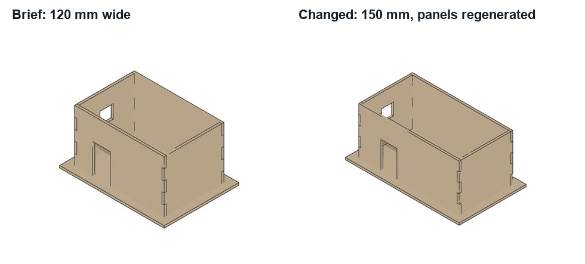
The demo building widened from 120 to 150 mm: panels, fingers and openings regenerated from the same editable cutters.
WHYReal projects change mid-build. Editable joints, cutters and a clear plan let you respond in minutes, and prove you understand how the parts depend on each other.
CHECKA v2 model, laser file, drawing and circuit plan that meet the card and agree with each other, plus an explanation.
FIXJoints no longer mesh after a width change? The finger bands depend on height, not width: check the cutters stayed on the corners. (Independent step: the Coach may explain tools but not decide your edits.)
WORKED EXAMPLE · DIFFERENT OBJECTWorked example on a different model: a student’s plywood changed from 3.0 to 2.7 mm, so every finger cutter narrowed by 0.3 mm and the servo pocket stayed the same.
STRETCH (AFTER THE CHECK PASSES)Take two cards at once and explain which one forced more changes.
Method basis: B3 · L1. Values and sequence are authored for this project.
Session J · Lesson 10 · com11-26-s04-d10
Release for fabrication.
Hand your team a complete, checked file pack and defend your design. Sprint 5 cuts, prints and paints it.
TODAYFile pack and parts list (25 min), defence (40 min).
18
Release the file pack and defend your design
IN SHORTChecklist; parts list by machine; hand in; explain joints, mechanism and power; live edit.
READ ALOUD
DOCUMENT: All files · Student OS SELECT: Model, laser file, figure, mechanism, circuit plan TOOLS / ROUTE: Checklist · hand in · two-minute conversation
Run the release checklist: units mm; panel thickness equals measured plywood; joints mesh; cutters hidden; figure printable; mechanism animation has no collisions; circuit plan within the power budget.
Write the parts list: each part, size, material, machine (Emblaser, H2C, Adventurer 5M, Elegoo, Cricut) and quantity.
Hand in the .blend, laser SVG, figure STL, assembly drawing PDF, circuit plan and parts list through Student OS.
Be ready to explain: why finger joints, how the mechanism moves the figure, and how you checked the power budget.
Show one live edit (move a window cutter or change a finger width) and explain which files must be regenerated.
STEP CHECKLIST
GLOSSARY
Fabrication release: The checked set of files that is sent to be made
Parts list: Every part with size, material, machine and quantity
WHYA fabrication release is a promise that the files are correct. Explaining your choices shows you understand the system, not just the steps.
CHECKA complete, checked file pack, a parts list by machine, and a defence with one live edit.
FIXNervous? Rehearse with the sentence frames in My supports.
WORKED EXAMPLE · DIFFERENT OBJECTThe demo parts list: 4 plywood panels and a base (Emblaser), snowman and cam (H2C, PLA), follower rod (2 mm steel), frosted windows (Emblaser, acrylic).
STRETCH (AFTER THE CHECK PASSES)Estimate total machine time for your part of the scene and compare it with your teammates’.
Method basis: N1. Values and sequence are authored for this project.
Before you submit
Student QA.
Evidence conversation
Keep it short and specific.
SENTENCE FRAMESThe first thing a visitor notices is ___ because ___. · My joints are ___ mm because the plywood measured ___. · The animation showed ___, so we changed ___. · The change forced me to regenerate ___.
Drawing of the South Elevation--Amoureaux House in Ste Genevieve MO.png · Drawn by James F. O’Gorman · Public domain · source. Processed as stated in each caption.
Messschieber misst Kugeldurchmesser.jpg · Rhetos · CC0 · source. Processed as stated in each caption.
Figures marked Illustration are drawn, not screenshots. Step values are starting points authored for this project. Draft for teacher review; not yet classroom-piloted.